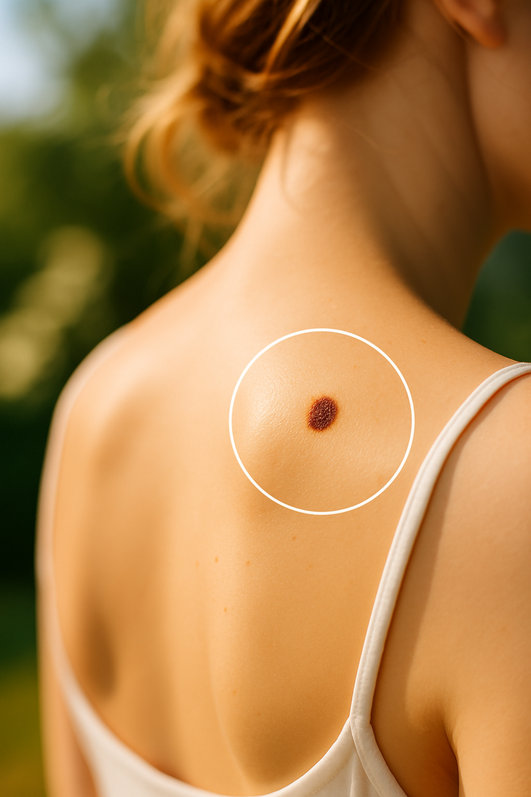
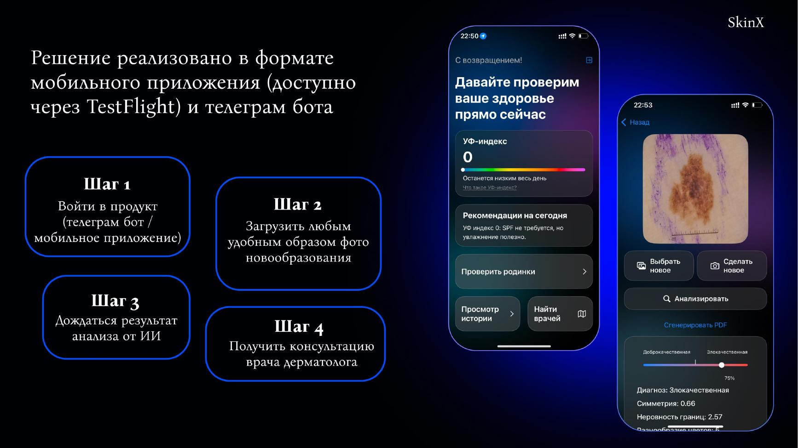
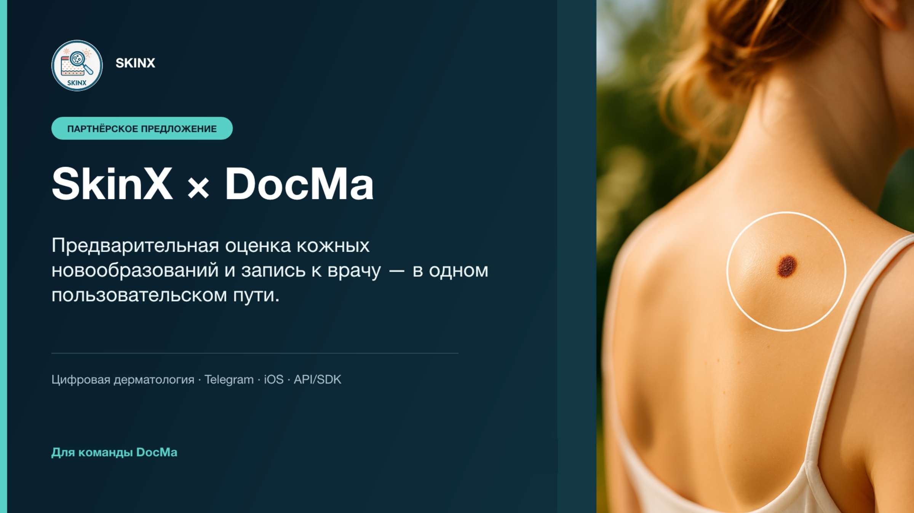

01 / SKINX
Запуск AI HealthTech-продукта
Сервис предварительного анализа изображений кожных новообразований. Моя зона ответственности — исследования, упаковка, контент и аналитика.

ЗАДАЧА
Проверить спрос и вывести MVP на рынок
Нужно было понять потребности пользователей и врачей, сформировать понятную коммуникацию продукта и поддержать запуск через контент и рекламные каналы.
МОЯ РОЛЬ
- CustDev и опросы пользователей
- Тексты и дизайн презентаций
- Коммерческие предложения
- Визуалы, сценарии и монтаж видео
- Аналитика в Яндекс Метрике
ЗОНА ОТВЕТСТВЕННОСТИ
Чётко разделяю личный вклад и результат команды
Интервью и опросы, Метрика, тексты КП, структура и дизайн презентаций, визуалы, сценарии и монтаж.
Анализ конкурентов, позиционирование, настройка рекламы и переговоры с потенциальными B2B-партнёрами.
ПРОЦЕСС
Исследование
Около 20 интервью с дерматологами и онкологами, пользовательские опросы с участием более 100 человек.
Упаковка
Структура и дизайн презентаций, тексты коммерческих предложений, коммуникационные форматы для B2C и B2B.
Контент
Визуалы для социальных сетей, сценарии и монтаж коротких видео для объяснения продукта.
Запуск
Совместная работа над Яндекс Директом, анализ поведения пользователей и эффективности каналов.
ОТ ИНСАЙТА К РЕШЕНИЮ
Исследования влияли на подачу продукта, а не оставались отдельным отчётом
Ответы пользователей и врачей помогли определить, что именно нужно объяснить каждой аудитории и какие сомнения снять до первого действия.
Две аудитории — две логики коммуникации
Для пользователей — простой сценарий и понятный следующий шаг. Для врачей и медицинских сервисов — доверие, роль специалиста и формат интеграции.
Сложную технологию показывала через путь пользователя
Вместо перегруженного описания AI — последовательность действий: загрузить изображение, получить предварительную оценку и при необходимости обратиться к врачу.
Контент снижал тревогу и подсказывал действие
Визуалы и видео строились вокруг наблюдения за изменениями кожи, без запугивания и без обещаний медицинской диагностики.
ПРОДУКТОВЫЙ СЦЕНАРИЙ
От фотографии до рекомендации обратиться к врачу
В презентационных материалах я показывала путь пользователя пошагово: вход в продукт, загрузка изображения, анализ и получение результата.

АРТЕФАКТЫ ЗАПУСКА
Как идея становилась понятным предложением
Фрагменты презентации и коммерческих материалов. Тексты, структура и визуальная подача выполнены мной.
РЕЗУЛЬТАТЫ
оплаченных продаж примерно за 1–1,5 месяца
CPL в кампании Яндекс Директа с переходом в Telegram-бот
потенциальных B2B-партнёра дошли до этапа переговоров
запущен в формате Telegram-бота и тестового приложения
КОНТЕНТ
Визуалы для социальных сетей
Серия материалов в единой стилистике: проблема, наблюдение, действие.
Концепция и тексты — Анна Никулина · визуальная реализация с помощью генеративного ИИ.
ВИДЕО
Сценарии и монтаж
Короткие ролики, созданные для привлечения внимания к теме здоровья кожи.

B2B-КОММУНИКАЦИЯ
Коммерческое предложение SkinX × DocMa
Самостоятельно подготовила текст, структуру и визуальное оформление: от объяснения продукта и пользовательского пути до вариантов сотрудничества.
SkinX представлен как проект из портфолио. Материалы не являются медицинской рекомендацией или диагностическим инструментом.